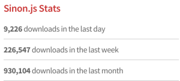

Components Testing
Keep an eye on UI State & Behavior
Fayçal Tirich
2015
Use the Space key to navigate through the slides
xUnit Test Patterns
System Under de Test (SUT)
"Whatever thing we are testing" defined from the perspective of the test (Class, Object, Method...)

Calc.add(1, 2) //Direct Inputs
> 3 //Direct Outputs
OperationService.create(Operation, Correspondant)
//DB record, JMS Message, Email notification, Log file entry
Inputs/Outputs Big Picture
F.I.R.S.T Principles
- Fast : Run tests quickly (since we will be running them all the time)
- Isolated/Independent : Do not relay on a global state, No order-of-run dependency, Must not fail because a dependency failed
- Repeatable : Run N times, get same result even if we change the environment (to help isolate bugs and enable automation)
- Self-checking : Test can automatically detect if it pass or fail (No human checking of output)
- Timely : Tests must be written at the right time, just before the production code (To avoid ending up with a code hard to test)
<div id="app">
<app-nav />
<app-view>
<app-sidebar />
<app-content />
</app-view>
</div>
Components Tree

Atomic Design
Chemistry metaphor to describe Components, provide semantic rules and principles of organization for interface elements
By PatternLab (A Static Site Generator)
Atomic Design
Atomic Design Tweak for SPA
More infoParent-Child Communication
Testing Tools Ecosystem

var SUT = Ractive.extend({
template: `
<div>
<h1>Bonjour {{user.nom}}</h1>
{{#if !user.email }}
<div class="alert">Vous devez renseigner votre email</div>
{{/if}}
</div>
`
});
it("Doit proposer de renseigner l'email
si il est manquant", function (done) {
component.set('user', {
nom: 'Homer'
});
var expectedHTML = `
<div>
<h1>Bonjour Homer</h1>
<div class="alert">Vous devez renseigner votre email</div>
</div>
`;
expect(component.toHTML()).to.equal(expectedHTML);
done();
});
it("Ne doit pas proposer de renseigner l'email
si il n'est pas manquant", function (done) {
component.set('user', {
nom: 'Marge',
email: 'marge@simpson.com'
});
var expectedHTML = `
<div>
<h1>Bonjour Marge</h1>
</div>
`;
expect(component.toHTML()).to.equal(expectedHTML);
done();
});
var SUT = Ractive.extend({
oninit: function () {
this.observe('toy' , function (toy) {
if (!toy) {
return;
}
if (toy.isRadioactive) {
this.fire('danger', 'Toy Radioactive');
} else {
//Play with toy
}
})
}
});
it('Doit déclancher un événement', function (done) {
var ractive = new Ractive({
template: '<alarm toy="{{toy}}" />',
components: {
alarm: SUT
}
});
ractive.on('alarm.danger', function (message) {
expect(message).to.equal('Toy Radioactive');
done();
})
ractive.set('toy', {
isRadioactive: true
})
});
var SUT = Ractive.extend({
el: fixture,
template: `
<div>
<h1>Bonjour {{user.nom}}</h1>
<button id="telecommande" on-click="regarderTele()">Regarder Télé</button>
</div>
`,
regarderTele: function () {
this.fire('tele');
}
});
var window, document, fixture, Ractive;
before(function (done) {
jsdom.env({
html: '',
scripts: [
__dirname + "/../../node_modules/ractive/ractive.min.js"
],
done: function (err, w) {
window = w;
document = w.document;
Ractive = w.Ractive;
fixture = document.createElement('div');
document.body.appendChild(fixture);
done();
}
});
});
after(function () {
window.close();
});
afterEach(function () {
fixture.innerHTML = '';
});
it('Doit réagir au click en déclanchant le bon événement', function (done) {
var component = new SUT();
component.on('tele', function () {
done();
});
var telecommandeBtn = document.getElementById('telecommande');
telecommandeBtn.click();
});
var TeleService = {
allumerTele: function () {
//...
}
};
var SUT = Ractive.extend({
el: fixture,
template: `
<div>
<h1>Bonjour {{user.nom}}</h1>
<button id="telecommande" on-click="regarderTele()">Regarder Télé</button>
</div>
`,
regarderTele: function () {
TeleService.allumerTele();
}
});
it('Doit appeler la bonne fonction du bon service', function (done) {
sinon.spy(TeleService, 'allumerTele');
var component = new SUT();
var telecommande = document.getElementById('telecommande');
telecommande.addEventListener("click", function () {
expect(TeleService.allumerTele.calledOnce).to.be.true;
done();
});
telecommande.click();
});